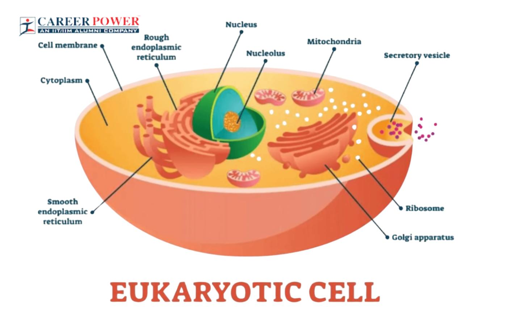
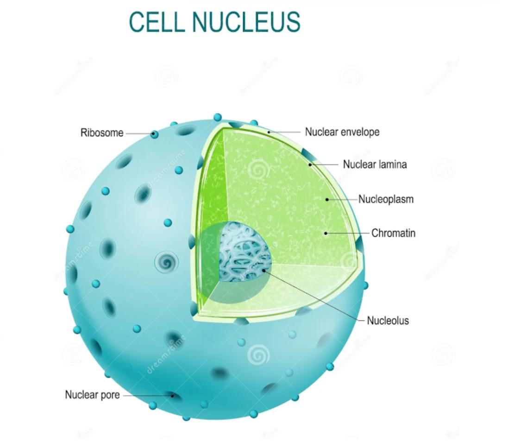
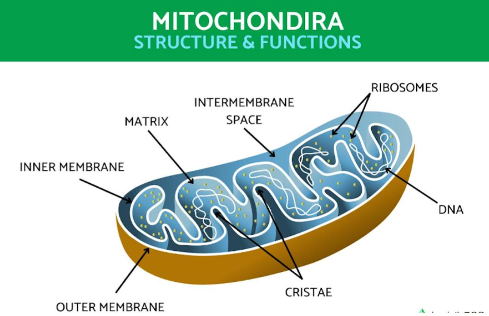
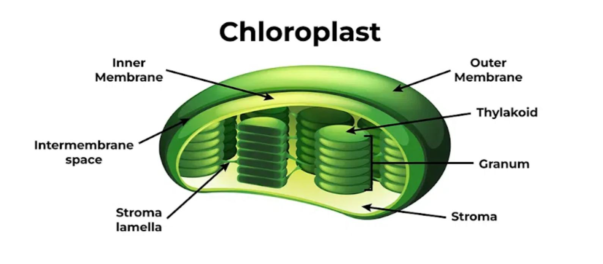
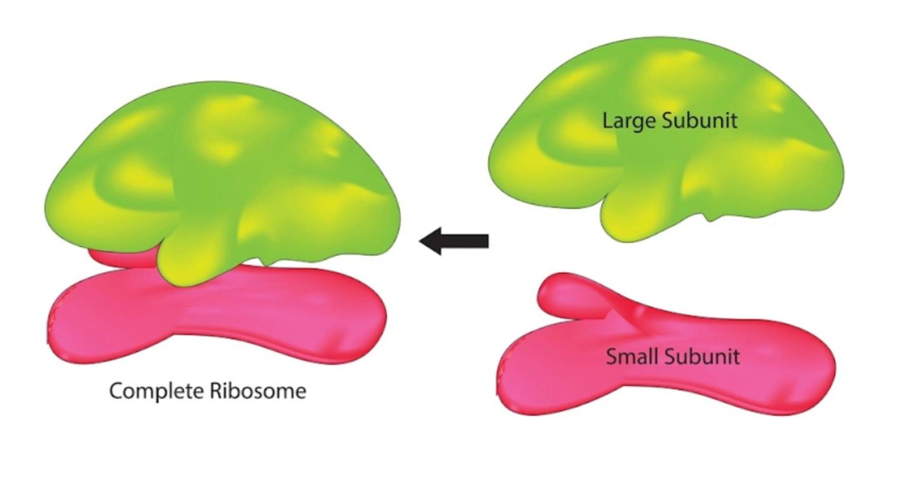
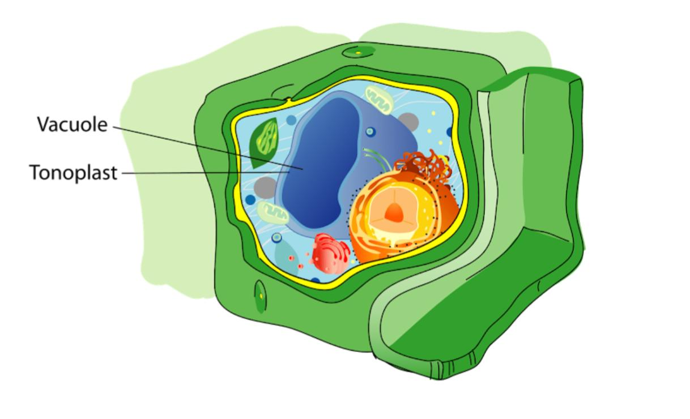

The basic structure of a cell (from exterior to interior) is the cell membrane, inside the cytoplasm and in the middle the nucleus.
The cell membrane is a thin layer that separates the content of the cell from the extracellular environment and its structure and functions will be described more in the -Cell Membranes-, -Passive Transport- and -Active Transport- lessons

The Nucleus
- It contains most of the genetic information of an eukaryotic cell (it is only found in eukaryotic cells).
- Cells usually have a single nucleus, however there are also exceptions: red blood cells are anucleated (they don't have a nucleus), hepatocytes (cells in the liver) are binucleated, and skeletal muscle cells are multinucleated.
- It is normally located at the center of the cell, but in cells that have big vacuoles, such as plant cells, the nucleus is pushed to the side.
- It is usually the most visible organelle.
- The nuclear envelope encloses the nucleus. It is a double membrane, two lipid bilayers with proteins attached, in between which there is a perinuclear space filled with liquid. The envelope also presents pores which regulate the flow of molecules into and out of the cell. The outer membrane has ribosomes attached to it.
- The nuclear lamina is a netlike arrangement of protein filaments, located underneath the inner membrane, which poses an important role in maintaining the shape of the nucleus.
- The nucleus contains the nucleoplasm which is similar to the cytoplasm: a gelatinous substance which contains dissolved salts, enzymes and organic molecules.
- The nucleolus is situated at the center of the nucleus. It is a structure made out of RNA and proteins and it isn't separated from the nucleoplasm by a membrane. It disappears while the cell undergoes division. There can be one or more nucleoli in a cell. This is where the subunits of ribosomes are formed, which are then taken through the pores of the nucleus and in the cytoplasm a large and small subunit will unite, forming a ribosome.
- The genetic information is organised under the form of chromatin, which is condensed DNA and proteins. There are two types of chromatin: heterochromatin (which is non-transcriptable, as it is extremely condensed and it appears very dark under the microscope, located near the nuclear envelope) and euchromatin (which is transcriptable, which is less condensed). An organized, highly condensed chromatin material forms a chromosome.

The Cytoplasm
- It is a jelly-like fluid that fills the cell, which includes the cytosol, filaments, proteins, ions and macromolecules such as the organelles.
- It contains the cytoskeleton, whose main role is to maintain the shape of the cell. It is also important in the mobility of the structures contained by the cytoplasm. It is made out of three different types of fibers: microtubules (the thickest), microfilaments (the thinnest, also called actin filaments) and intermediate fibers.
- The cytosol alternates states, sometimes it is more jelly-like (near the cell membrane) (less metabolic activity), while sometimes it is more liquid (near the inside of the cell) (more intense metabolic activity). It resembles a colloidal solution, with quick diffusion across the cell.
- The organelles we will discuss next are the mitochondrion, chloroplast, ribosome and vacuole (these being the only ones that are requested in the IJSO syllabus).
The Mitochondria
- It is the site of cellular respiration, the metabolic process through which cells get energy in the form of ATP by oxidizing sugars, fats and other fuels.
- They are found in all aerobic cells and they are missing from anaerobic cells.
- They can be spherical or oval in shape.
- Some cells can have a singular mitochondria, however there are many cells that have even hundreds or thousands of mitochondria (plural for mitochondrion).
-
- Regarding their structure, the content of the mitochondrion is separated from the cytoplasm by a double membrane, each membrane being a phospholipid bilayer. The outer membrane is smooth, it has pores and it is much more permeable than the inner one, which is convoluted, forming infoldings called cristae, which increase the mitochondrion's surface area up to 10 times, enhancing the productivity of the cell respiration. The mitochondrial matrix is the fundamental substance enclosed by the inner membrane, and it contains water, ions, proteins, lipids, nucleic acids, vitamins, ribosomes and, most importantly, the enzymes that catalyze the cell respiration reactions.
- The matrix contains a whole prokaryotic genetic apparatus made out of ADN, ARN, enzymes, ribosomes and other factors involved in the replication, transcription and translation processes undergone by the nucleic acids. This supports the endosymbiont theory (the bacterial origin of mitochondria). Therefore, these organelles are autonomous (somewhat independent).

The Mitochondria
- These are found in plant cells and algae (protists).
- They are the most numerous and most important plastids, as they are responsible for the process of photosynthesis.
- They contain chlorophyll, a green pigment, the only one that is able to transform light energy to chemical energy.
- Their structure involves a double membrane: the outer one that is a bit more permeable, and the inner one which is convoluted, forming invaginations that increase the chloroplast's reaction surface; in between the membranes, there is the periplastidial space. The mitochondrial matrix is the fundamental substance of the chloroplast, containing starch granules, ions, ribosomes, nucleic acids, lipids and most importantly, the enzymes that catalyze the photosynthesis reactions independent of light.
- Just as in the mitochondria, the matrix contains a whole prokaryotic genetic apparatus made out of ADN, ARN, enzymes, ribosomes and other factors involved in the replication, transcription and translation processes undergone by the nucleic acids. This supports the endosymbiont theory (the bacterial origin of mitochondria). Therefore, these organelles are autonomous (somewhat independent).
- The invaginations of the chloroplast's inner membrane form the thylakoid system: thylakoids (which look like coins stacked on top of each other, forming granes) and stroma lamella, on which the granes are situated.

The Ribosome
- These organelles have no membrane. The only reason for which they are considered organelles is for their importance, as they are the protein synthesis site.
- They can be either found dispersed in the cytosol or attached to the nucleus and the endoplasmic reticulum, or inside the mitochondria and chloroplasts.
- They are made out of two unequal subunits (one big one and one small one, both formed in the nucleoli), consisting of ribosomal ARN and proteins, being assembled together in the nucleus.
- Sometimes, groups of ribosomes can be observed in a linear succession, these groups being called polisomes.
- The ribosomes found in chloroplasts and in mitochondria are smaller than the ones found in the cytosol or than those attached to other structures.

The Vacuole
- They take from the Golgi apparatus, the endoplasmic reticulum and from the membrane (through cytosis).
- As structure, they are enclosed by a simple membrane called tonoplast, and they contain the vacuolar juice made out of water, mineral salts, organic substances, enzymes, reserve substances, secretion products, toxins and flower pigments.
- They are permanently found in plant cells, fungi and green protists (algae) but they are temporary structures in animal cells. Animal cells usually have more small vacuoles, while mature plant cells normally have one large central vacuole, which can occupy up to 90% of the cellular space.
- Their roles are to maintain the homeostasis and the hydroequilibrium of the cell (containing reserves of both water and mineral substances), to have backup organic substances, to isolate toxic products so that they do not affect the cell, they have an ecological role and are involved in the cellular digestion, and they also eliminate the cellular waste.

Written by Bianca Buzas